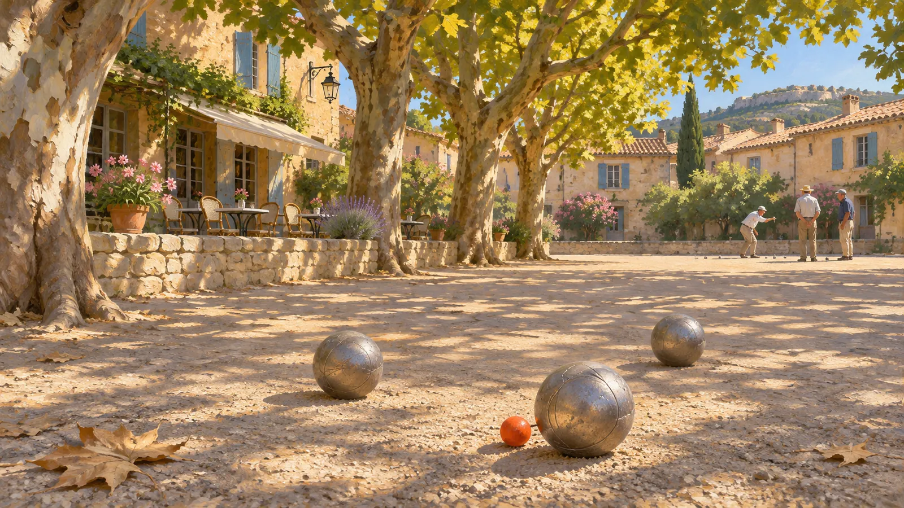

D’où vient la pétanque ?
Avant la pétanque, on jouait en Provence au jeu provençal, ou longue : on lançait la boule après trois pas d’élan, sur des distances de quinze à vingt mètres. En 1907, à La Ciotat, un champion de ce jeu, Jules Hugues dit « Lenoir », ne peut plus courir à cause de ses rhumatismes. Ses amis tracent alors un cercle, raccourcissent le terrain et lancent les pieds joints, immobiles.
Le nom vient du provençal pèd tanca, les pieds « plantés ». Le mot devient officiel lors du premier concours de La Ciotat, en 1910. La Fédération française de pétanque et jeu provençal naît en 1945, la fédération internationale en 1958, à Marseille. La France compte aujourd’hui près de 300 000 licenciés, et bien plus de joueurs du dimanche. Wikipédia, Pétanque, s’ouvre dans un nouvel onglet.

Comment se joue une partie ?
Le cochonnet. Le joueur qui commence trace un cercle, puis lance le cochonnet entre 6 et 10 mètres. Il joue ensuite la première boule, en gardant les pieds dans le cercle.
Le point. La boule la plus proche du cochonnet « a le point ». L’autre joueur lance jusqu’à le reprendre, ou jusqu’à n’avoir plus de boule.
Les points. Quand toutes les boules sont jouées, le gagnant de la mène marque un point par boule plus proche que la meilleure boule adverse. Le premier à 13 points gagne.
En tête-à-tête et en doublette, chaque joueur a trois boules. En triplette, deux. Le guide des règles de la pétanque montre chaque étape avec un dessin : le point, le carreau, les boules mortes.
Pointer ou tirer ?
Pointer, c’est placer sa boule au plus près du cochonnet. La roulette part au ras du sol et roule presque tout le chemin. La demi-portée vole jusqu’à mi-chemin, puis roule. La plombée monte haut, retombe près du but et s’arrête vite : c’est elle qu’on choisit quand une boule gêne devant.
Tirer, c’est frapper une boule adverse pour la chasser. Le plus beau tir est le carreau : votre boule prend exactement la place de celle qu’elle a frappée. Et quand une boule finit collée au cochonnet, on dit qu’elle fait un « biberon ».
Pourquoi la pétanque plaît-elle à tout âge ?
La pétanque est née pour un joueur qui ne pouvait plus courir. On joue debout, sans élan, à son rythme, et l’on peut prendre le temps de regarder le jeu avant chaque boule. L’adresse compte, mais la réflexion aussi : faut-il pointer ou tirer, rouler ou passer par-dessus ?
Quand il pleut, ou quand les jambes fatiguent, la version sur écran garde ce plaisir : choisir son lancer, viser, attendre la boule et voir qui a le point.
Cinq conseils pour mieux pointer
Regardez le terrain avant de lancer. Une boule devant le cochonnet arrêtera une roulette. Passez alors en plombée.
Visez un peu court plutôt que trop long. Une boule devant le cochonnet gêne l’adversaire, une boule derrière ne sert à rien.
Ne tirez pas trop tôt. Tant qu’il vous reste des boules et que l’adversaire n’est pas collé au cochonnet, pointer suffit souvent.
Gardez une boule pour la fin. Le joueur qui lance la dernière boule a souvent le dernier mot.
Mesurez quand c’est serré. À l’œil, deux boules à quelques centimètres se ressemblent. Le mètre tranche.
Jouer à la pétanque sur Jeux de Papi
-
 Pétanque
PétanqueUne partie en tête-à-tête contre Marius, sur un boulodrome de village sous les platanes. Dans le panneau Votre lancer, choisissez la roulette, la demi-portée ou la plombée, réglez la direction et la longueur avec de grands boutons, puis cliquez sur Lancer la boule. Rien ne se joue au réflexe ni à la vitesse de la souris.
Au niveau Facile, la partie se joue en 7 points et la trace montre tout le chemin de la boule, jusqu’à l’endroit où elle s’arrête. Au niveau Moyen, vous pouvez tirer, et la trace s’arrête en chemin. Au niveau Difficile, seul l’endroit où la boule tombe est montré, et Marius choisit lui aussi entre pointer et tirer. Quand ça se joue à quelques centimètres, le mètre ruban sort et le jeu dit qui a le point.
Questions fréquentes
Combien de points faut-il pour gagner ?
Une partie se joue en 13 points. Sur Jeux de Papi, le niveau facile se joue en 7 points, pour une partie d’une dizaine de minutes.
Que veut dire « faire Fanny » ?
C’est perdre une partie sans marquer un seul point, 13 à 0. La tradition veut que le perdant «La tradition voulait que le perdant embrasse le portrait d’une certaine Fanny, que l’on trouvait accroché dans de nombreux boulodromes.nbsp;embrasse FannyLa tradition voulait que le perdant embrasse le portrait d’une certaine Fanny, que l’on trouvait accroché dans de nombreux boulodromes.nbsp;», une figure peinte ou sculptée que l’on trouve dans de nombreux boulodromes.
Une boule peut-elle déplacer le cochonnet ?
Oui. On joue les boules et le cochonnet là où ils s’arrêtent. S’il sort du terrain, la mène est nulle, sauf si un seul joueur a encore des boules en main : il marque alors autant de points qu’il lui en reste.